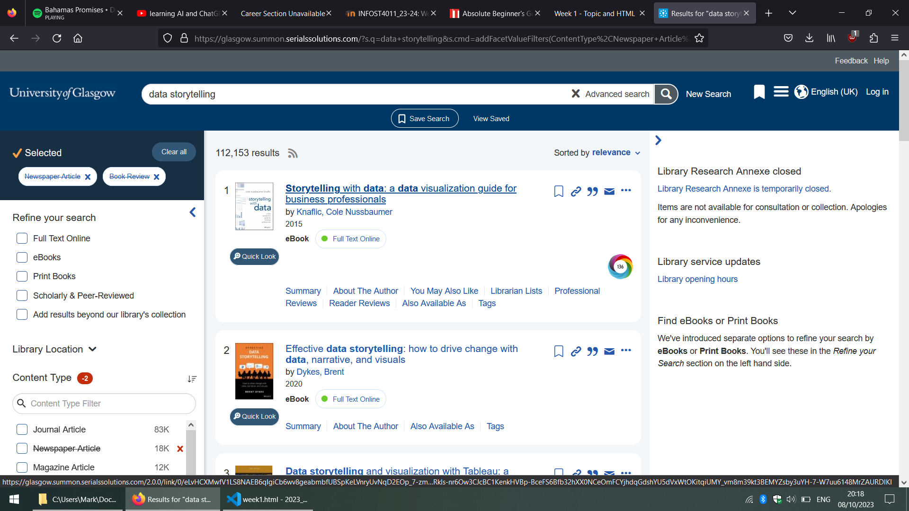
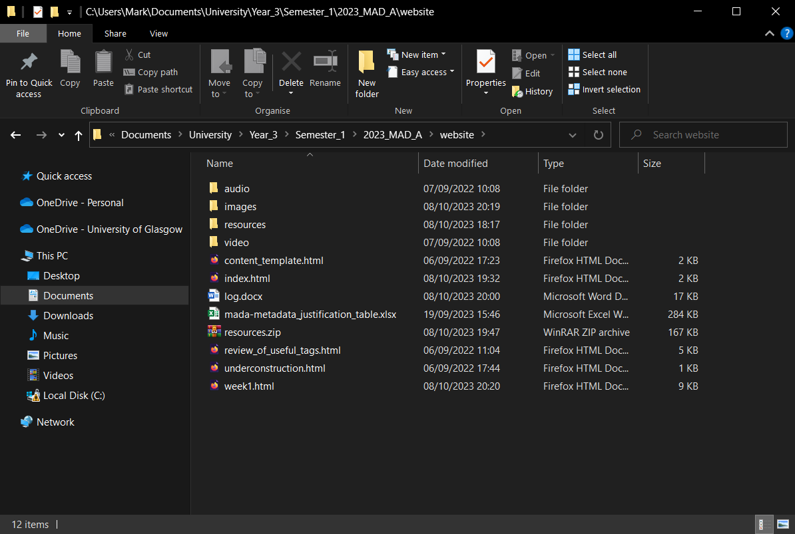
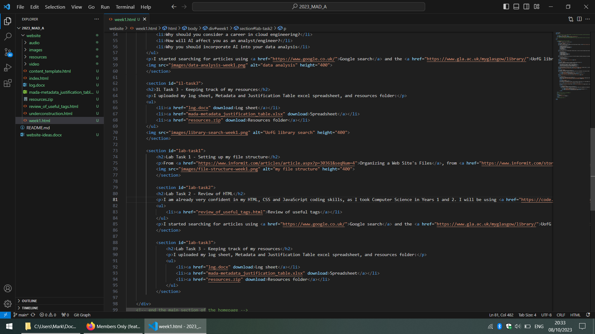

Week 8 - Analysing and Editing Digital Audio
IL Task 1 - Choosing my topic
To begin choosing my topic I reviewed the course description located here, and I then made a list of Digital Media topics I was interested in personally, based on my experience of the first 2 years of my degree:
- Artificial intelligence
- Machine learning
- Data analytics and visualisation
- Multimedia analysis and design
- 3D modelling
- Web design
- Cloud networking
I then refined my list by thinking about related careers, as this will give my website some real-world relevance, and I put some thought into these. I tried to find out what I was passionate about, what careers relate to this, and how my topic can offer value to an audience. I also considered the emergence of AI and how this will influence most apsects of digital media and the tech industry. The list of careers I came up with was:
- Data Analyst
- Business Analyst
- Cloud Engineer
- Machine Learning Engineer
- Project Manager (in tech)
- Market Researcher
At this point I considered that the topic of AI and the subtopic of machine learning was too prevalent in the tech industry to ignore, so this was one of my top options. However, I am most passionate about data analysis. Cloud engineering and machine learning felt to me to have too steep a learning curve to discuss in my website. However, much of the base skills, such as python programming, have a lot of cross-over relevance. In data analysis I considered I could talk about libraries such as pandas, numpy and matplotlib. I thought the target audience could be someone in the same stage of their education and career as me - coming to the end of their degree and trying to start a career in the tech industry. At the end of this task my top 3 topics were as follows:
- Data analysis
- Artificial intelligence
- Cloud networking

IL Task 2 - Explore the scope of the topic and narrow down the focus
Potential questions that I want my website to answer:
- Why should you consider a career in data analysis?
- Why should you consider a career in cloud engineering?
- How will AI affect you as an analyst/engineer?
- Why you should incorporate AI into your data analysis
I started searching for articles using Google search and the UofG library search. I started keeping a log sheet and Metadata and Justification Table excel spreadsheet to record how I searched for information. Links to download these can be found below under the Task 3 heading. I decided on my topic of Why you need to incorporate AI into your data analysis. This YouTube video helped me decide on my topic:
IL Task 3 - Keeping track of my resources
I uploaded my log sheet, Metadata and Justification Table excel spreadsheet, and resources folder:
Lab Task 1 - Setting up my file structure
From Organizing a Web Site's Files, from the Absolute Beginner's Guide to Creating Web Pages, 2nd Edition (Stauffer, 2002), it became clear to me that a hybrid file structure is the most practical to use. Additionally, I used this file structure in my Web Application Development class last year, so it is the most familiar to me - therefore the one I chose for this project. I am already familiar with file naming conventions, such as using lowercase letters, hyphens/underscores, and avoiding spaces. I then downloaded the MAD (A) Template file system and HTML documents, adjusting them as necessary to fit my hybrid file structure and page names.
Lab Task 2 - Review of HTML
I am already very confident in my HTML, CSS and JavaScript coding skills, as I took Computer Science in Years 1 and 2. I will be using Visual Studio Code to write the code for my website, and git for version control and uploading to GitHub. To refresh my memory on some frequently used tags I had a look at the following page provided in the MADA HTML template:
Lab Task 3 - Create your own HTML files
I started the coding process now by coding this first week 1 web page. It includes my thought process in deciding my topic, links to download all my resources, and various tags for navigation and displaying images.